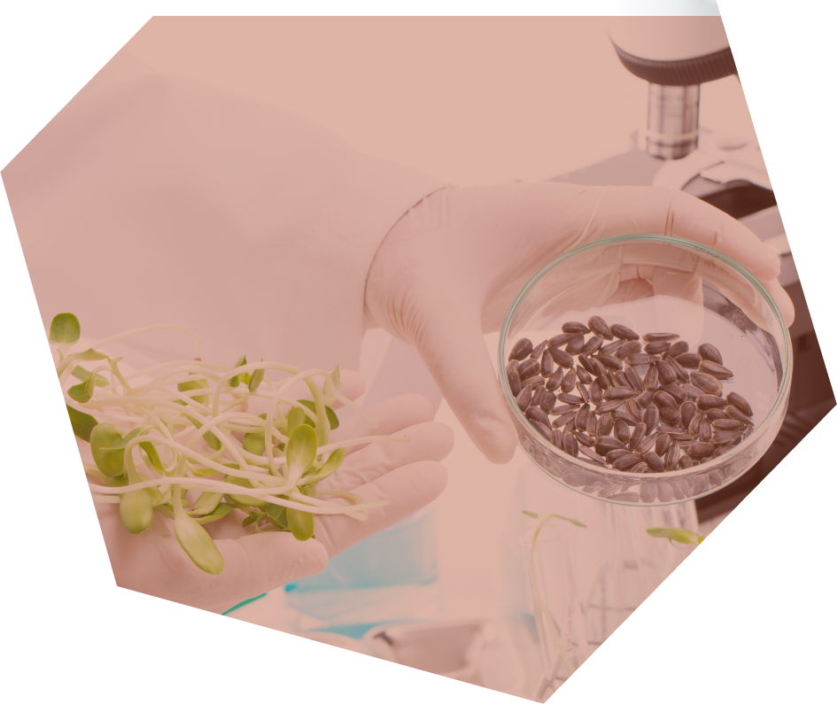
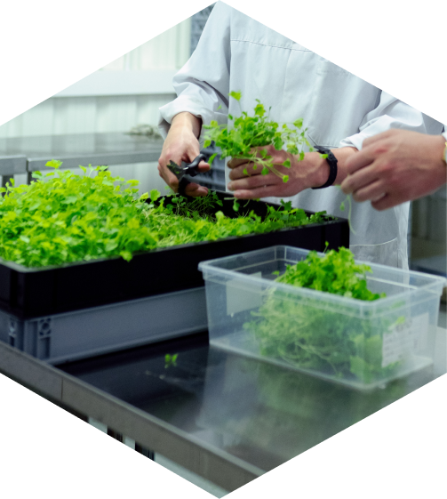
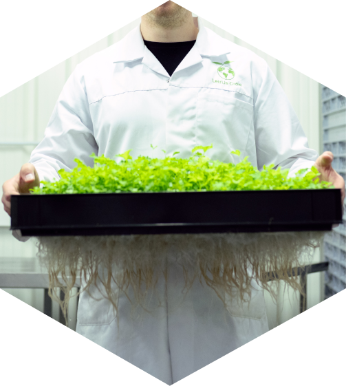

Genetics
Harnessing state-of-the-art technologies in data science, biotechnology, and agricultural management, we drive genetic enhancements in sunflower crop. We possess the world's most comprehensive and diverse genetics repository. Over the past years, we've consistently employed pioneering methods to achieve unparalleled levels of genetic advancement in the global market.

Research and development
Our annual testing encompasses thousands of plots across main sunflower countries.
Our paramount criterion for Research and Development initiatives is optimizing yield in sunflower crop.
- Extensive Germplasm Foundation: Our improvement program is rooted in a broad germplasm base. Our worldwide reach empowers us to capitalize on genetic diversity to the fullest extent.
- Wide Scope and Reach: We assess our germplasm in thousands of plots annually, spanning across main sunflower production countries. This expansive approach enables us to comprehensively understand each environment and its interaction with our genetic reservoir.
- Optimized Genetic Yield: Our accelerated process, involving multiple generations per year coupled with early generation evaluations, enables us to achieve a single improvement cycle within 4 years. This agility enhances adaptability to changing environments and emerging production systems.

Improvment Programm
Stringent Field Testing
Our approach centers on yield optimization, disease tolerance, streamlined logistics, mechanization, and effective management practices.
- Applied Biotechnology: We integrate genomic selection to complement conventional breeding, along with molecular marker tools for trait development.
- Advanced Information Systems: Our information systems are seamlessly integrated with statistical analysis, facilitating global data management.
